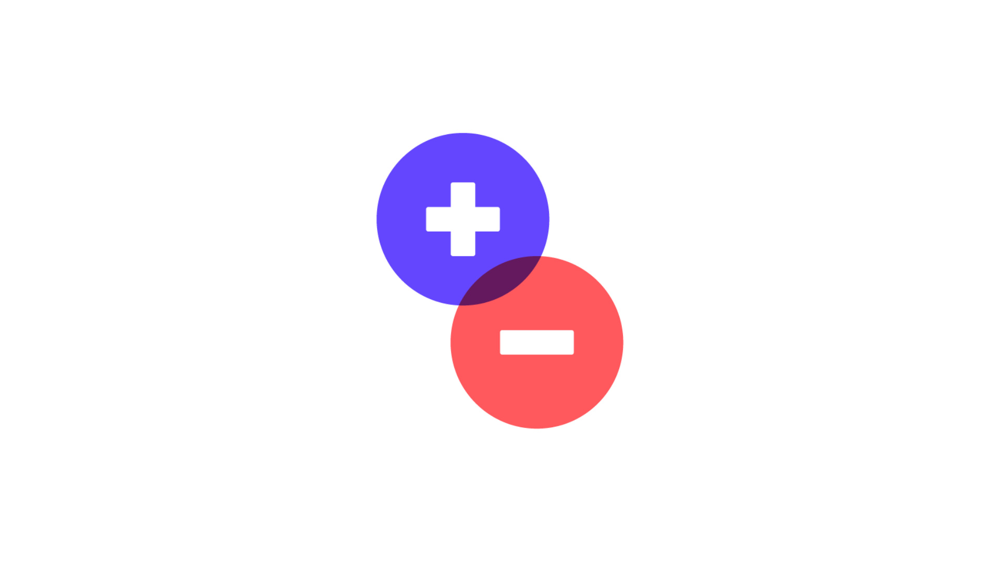
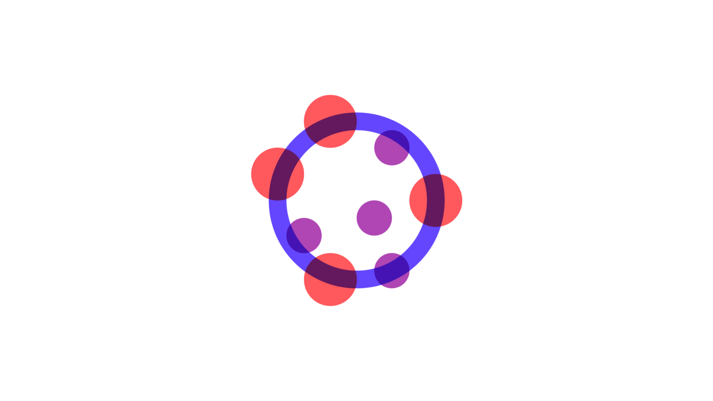

The measurement gap
The measurement gap is real, and it's costing PR teams a seat at the table.
You've run the campaigns, secured the coverage, and tracked the sentiment. Yet every reporting cycle, the board asks the same question: 'But what did this actually do for the business?' That's the measurement gap—the distance between what you know and what the board believes.
Hover a signal to pause and read the gap it closes
The
measurement
gap
measurement
gap

Inaccurate data
Boolean searches inflate volume metrics and leave key coverage uncounted.

Discredited metrics
Clip counts and AVEs simply don't cut it with the board anymore.
Manual reports
Hours of manual data pulls drained from every reporting cycle.

Clunky formats
Reports that land in inboxes yet never drive a decision.
New emerging frontiers
Brands cited or ignored in AI search, with no way to measure it.